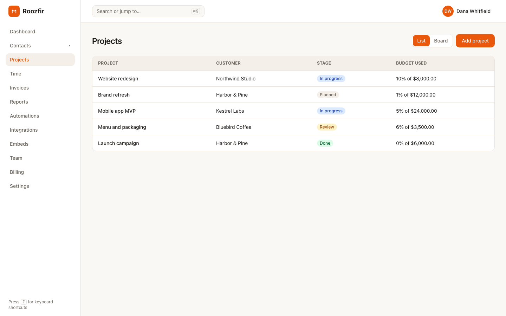
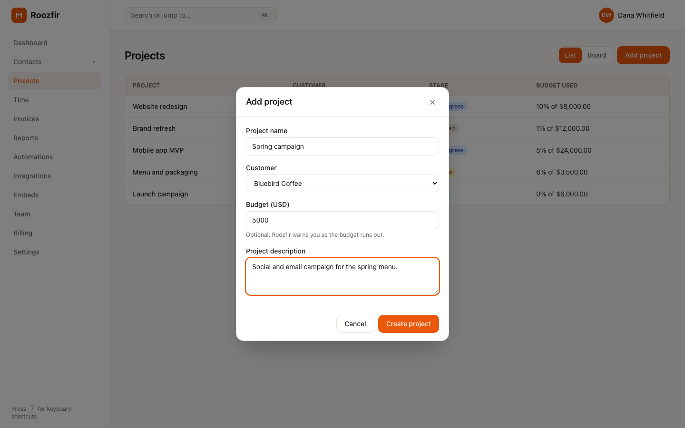
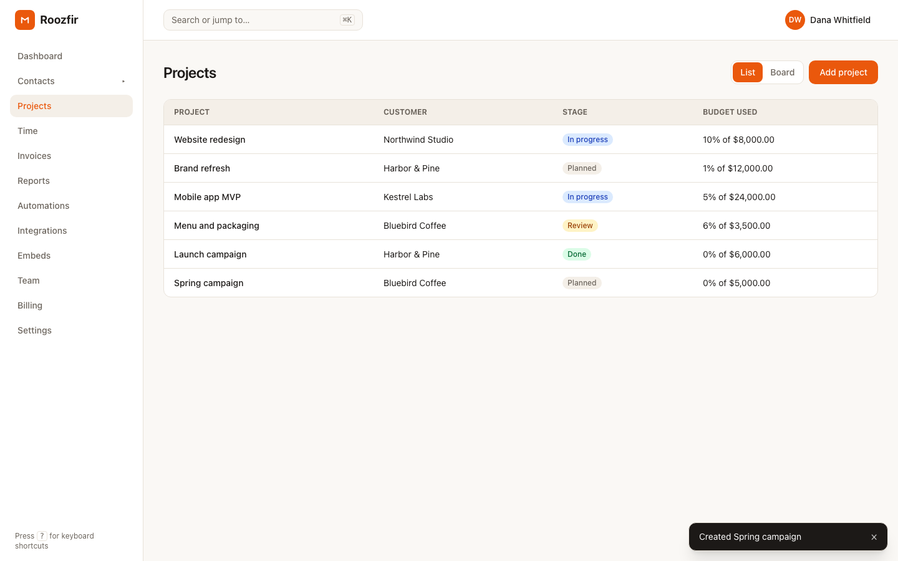

Help Center » Projects and time
How to create a project
Projects are where your tracked time and invoices come together. Each project belongs to one customer and can have a budget.
- Click Projects in the left-hand menu.

The Projects page with a list of projects and the Add project button at the top right - Click Add project.
- Type a Project name, choose the Customer from the list and, if you want Roozfir to warn you as the money runs out, enter a Budget. The description is optional.

The new project form filled in with the name Spring campaign, customer Bluebird Coffee and a budget of 5000 - Click Create project. The project appears in the list with the stage "Planned".

The projects list showing the new Spring campaign project - Click the project name to open its page and see the time tracked against it.
Tip: Projects can be moved across the board (Planned, In progress, Review, Done) by choosing Board at the top of the Projects page.